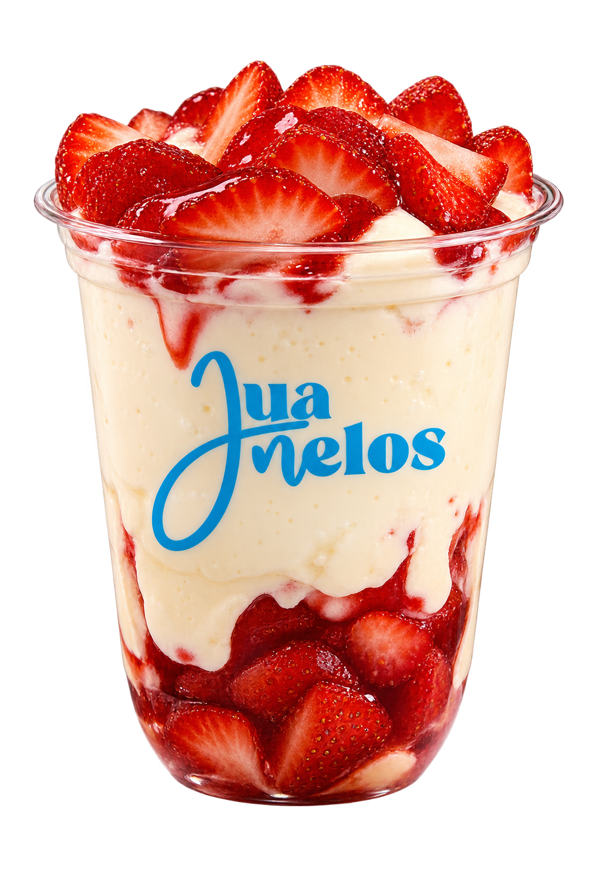
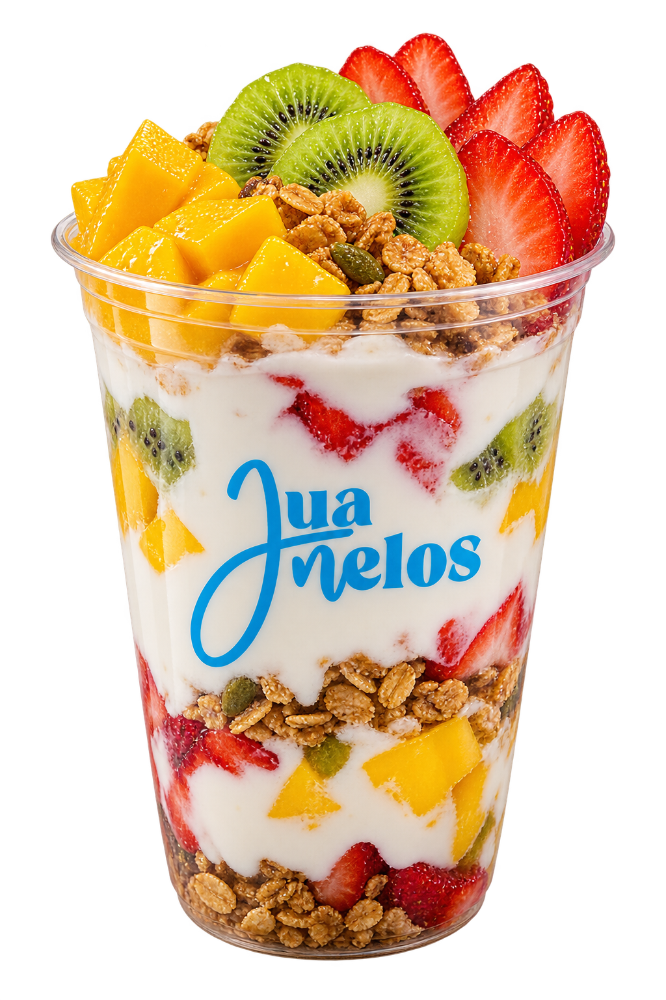
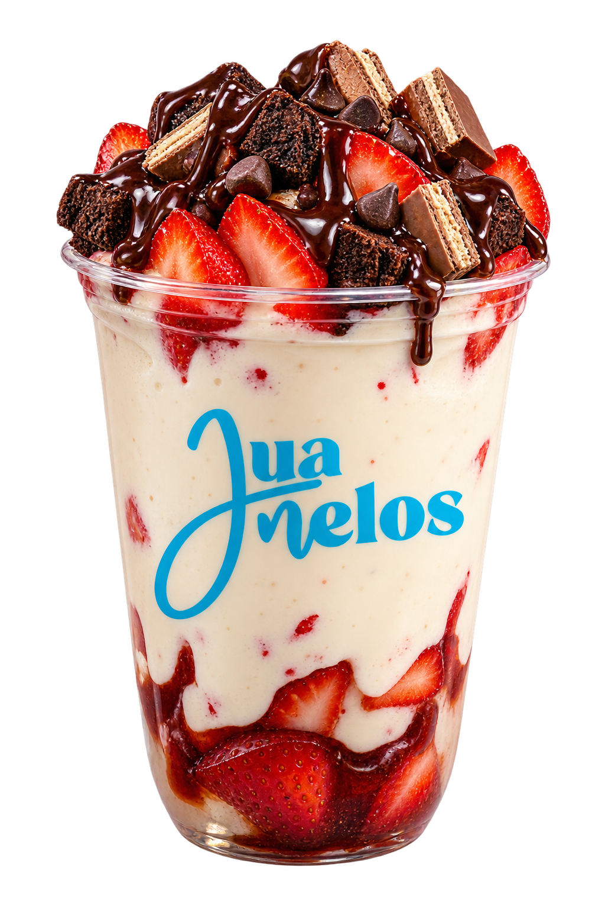

Tu lugar
más delicioso.
Fresas, crema y un poquito de felicidad.
Todo lo que amas de Juanelos, aquí.


Hecho para alegrarte el día.Fresco. A tu gusto. Siempre Juanelos.
EMPIEZA POR TU ANTOJOAlgo rico
Algo rico
te está esperando.
Explora la carta y arma tu pedido.
Hacer mi pedido ↗
ENCUÉNTRANOS A TU MANERA